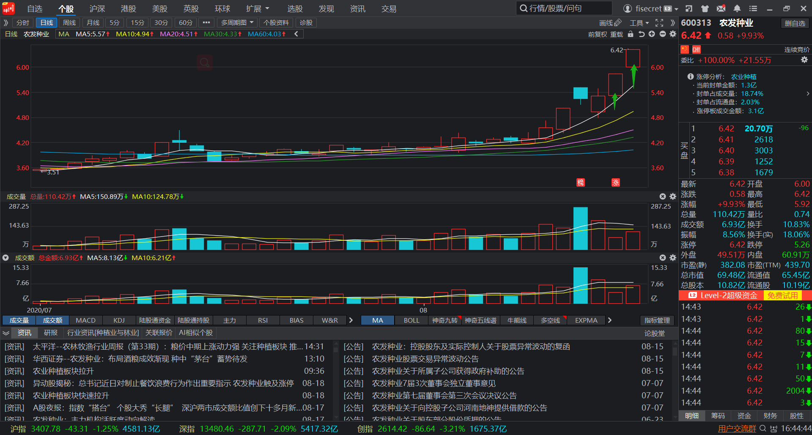

20-08-19 操作总结
操作总结
近期自己做的种子股完全超出了我的预期，我依旧拿着原本震荡市高抛低吸的理论做，导致自己丢失了很大的利润。
很值得深入反思和总结。
买入点
具体的买入逻辑和买点在上一篇文章 《板块择股 -- 方法总结》已经详细说明，就不在此处赘述。
卖出点
这是自己很不满意的一个地方，也是需要总结教训的地方。
自己在第一个箭头的区域，涨幅百分之7左右的区域，卖掉了三分之一的仓位。因为自己依旧当着高抛低吸来做，看
打到了前高附近，有回落趋势，便卖了一部分，谁知是主力诱空，下一分钟便封住涨停。
自己在第二个箭头的区域，涨幅百分之9左右的区域，再次卖掉了三分之一的仓位。因为自己把京粮控股（000505)
当作龙头，看龙头封板没封住，自己的龙二也难有行情，便再次卖出。谁知是换龙头动作，自己的票直接抢先上板
带动板块，抢到了龙头地位。
明天自己会清仓，计划是冲高走掉一半，封板不坚决或者封不住的话直接清掉自己最后的三分之一仓位。理由在于
三板见衰竭，且今日盘面上看，龙二（京粮）龙三（登海）助攻的票尾盘都有打开回封，一些跟风票甚至尾盘翻
绿，从而看明日板块会有大的分化。从而认为冲高回落的面大。但这都只是我的预测，具体的要明天盘中看。
总结
自己若是明日冲板再卖，可以吃满这三十个点的利润。因为自己的提前抢跑，整整少了一半的收益，十分可惜。
分析缘由，一个是在于自己拿不住票。另一个是思维转换的太慢。
一个板块如果整体几只票一起冲板，那就不能当成震荡行情来看，而大概率是在走主升浪。主升浪中的龙头，那是
值得坚定持有的，就算板块集体杀跌，龙头也总会有拉高和反复，给我们充分的时间和空间离场。因此板块龙头操
作一定要放慢下来，不用看着分时图来寻找卖点，整体操作要慢下来。常说“逃顶快三分，买入慢三秒”，但龙头
的卖出要和买入一样慢下来，当自己觉得该卖的时候，等上一会，泡杯茶，再回来下单。
